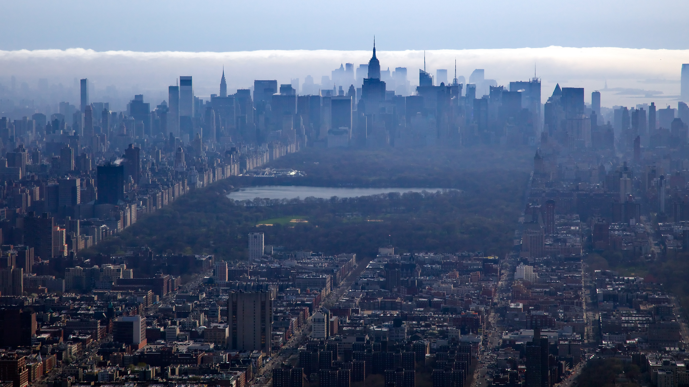
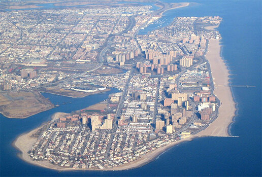

Histoire
New York officiellement City of New York, autrement connue sous les noms et abréviations de New York City ou NYC, est la plus grande ville des États-Unis et l'une des plus importantes du continent américain. Elle se situe dans le Nord-Est des États-Unis, sur la côte atlantique, à l'extrémité sud-est de l'État de New York. La ville de New York se compose de cinq arrondissements appelés boroughs : Manhattan, Brooklyn, Queens, le Bronx et Staten Island. Ses habitants s'appellent les New-Yorkais. En 1664, les Anglais conquirent la Nouvelle-Amsterdam qui fut rebaptisée « New York » en l'honneur de Jacques, duc d'York et frère du roi Charles II. L'anglicanisme devint la religion officielle de la colonie en 1698. La ville se développa rapidement : en 1700, elle comptait près de 5 000 habitants. Les premières institutions culturelles furent fondées comme le King's College en 1754. Le commerce se diversifia et se développa notamment grâce à l'aménagement du Great Dock sur l'East River en 167
- 

Géographie
officiellement City of New York, autrement connue sous les noms et abréviations de New York City ou NYC, est la plus grande ville des États-Unis et l'une des plus importantes du continent américain. Elle se situe dans le Nord-Est des États-Unis, sur la côte atlantique, à l'extrémité sud-est de l'État de New York. La ville de New York se compose de cinq arrondissements appelés boroughs : Manhattan, Brooklyn, Queens, le Bronx et Staten Island. Ses habitants s'appellent les New-Yorkais. En 1664, les Anglais conquirent la Nouvelle-Amsterdam qui fut rebaptisée « New York » en l'honneur de Jacques, duc d'York et frère du roi Charles II. L'anglicanisme devint la religion officielle de la colonie en 1698. La ville se développa rapidement : en 1700, elle comptait près de 5 000 habitants. Les premières institutions culturelles furent fondées comme le King's College en 1754. Le commerce se diversifia et se développa notamment grâce à l'aménagement du Great Dock
- 

Démographie
officiellement City of New York, autrement connue sous les noms et abréviations de New York City ou NYC, est la plus grande ville des États-Unis et l'une des plus importantes du continent américain. Elle se situe dans le Nord-Est des États-Unis, sur la côte atlantique, à l'extrémité sud-est de l'État de New York. La ville de New York se compose de cinq arrondissements appelés boroughs : Manhattan, Brooklyn, Queens, le Bronx et Staten Island. Ses habitants s'appellent les New-Yorkais. En 1664, les Anglais conquirent la Nouvelle-Amsterdam qui fut rebaptisée « New York » en l'honneur de Jacques, duc d'York et frère du roi Charles II. L'anglicanisme devint la religion officielle de la colonie en 1698. La ville se développa rapidement : en 1700, elle comptait près de 5 000 habitants. Les premières institutions culturelles furent fondées comme le King's College en 1754. Le commerce se diversifia et se développa notamment grâce à l'aménagement du Great Dock